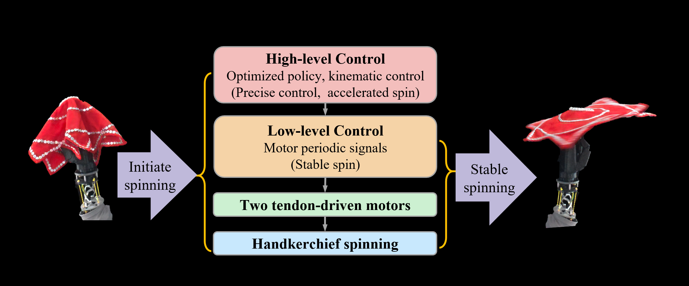

ABSTRACT
Spinning flexible objects, exemplified by traditional Chinese handkerchief performances, demands periodic steady-state motions under nonlinear dynamics with frictional contacts and boundary constraints. We design a tendon-driven dexterous wrist based on a parallel anti-parallelogram structure, achieving $90^\circ$ omnidirectional rotation with low inertia and decoupled roll–pitch sensing, and implement a hierarchical control scheme. A particle-spring model provides a control-oriented abstraction to analyze initiation strategies. Hardware experiments validate this framework, achieving $\sim99\%$ unfolding ratio and fingertip tracking error of $\mathrm{RMSE}=2.88\,\text{mm}$. These results show that combining task-tailored wrist hardware with control-oriented modeling enables robust rest-to-steady-state transitions and precise periodic manipulation of flexible fabrics.
SYSTEMATIC PERSPECTIVE OF HANDKERCHIEF SPINNING TASK
To address these challenges, we propose the integrated framework:
- Design a parallel anti-parallelogram tendon-driven wrist to provide the high-dynamic actuation required for spinning.
- Develop a control-oriented particle-spring model to abstract the behavior of the handkerchief in a form suitable for strategy design.
- Combine these with a hierarchical controller and tailored initiation strategies to manage the transition from rest into stable periodic motion.
Together, this framework enables precise and robust handkerchief spinning.

DETAILED METHOD
Intuitive dexterous wrist
We first analyzed the mobility of the human wrist. In the ulnar-radial direction, the human wrist ranges from about $-45^\circ$ to $+25^\circ$. In flexion and extension, the range is $-75^\circ$ to $+75^\circ$. Based on these observations, we developed an intuitive dexterous wrist that achieves omnidirectional $90^\circ$ rotation without singularities. The intuitive dexterous wrist extends these ranges by approximately 100% in ulnar deviation, 260% in radial deviation, and about 20% in flexion-extension.

Parallel anti-parallelogram tendon-driven wrist and modeling
Inspired by human wrist anatomy, we design a compact 2-DOF tendon-driven joint with two orthogonal anti-parallelogram linkages. The design reduces footprint and inertia by $\sim50\%$, preserves $90^\circ$ omnidirectional rotation, and integrates decoupled encoders for precise roll-pitch sensing. Tendons are routed through guides to rear-mounted motors, minimizing distal inertia and enhancing dynamic responsiveness. The wrist is then modeled as a spherical rolling-contact joint. Its motion is described by the bending plane angle $\alpha$ and the deflection angle $\beta$, which directly correspond to twisting and deflection in the handkerchief spinning task.
Hierarchical control
We implement a high–low level control framework: at high level, optimized kinematic strategies initiate and regulate spin; at low level, two tendon motors execute commands. During initiation, kinematic control ensures acceleration; once stable spinning emerges, direct periodic motor commands maintain motion with improved stability.
Particle–spring model and initiation strategy
In the handkerchief modeling and initiation strategy study, we carried out dedicated simulations. The handkerchief is represented by a particle–spring model under frictional contacts and boundary constraints. The evaluation is based on the unfolding area and Poincaré analysis. Here, a Floquet multiplier is computed from the Poincaré map: values less than one imply stability, while values greater than one indicate instability. (For derivation details, see the paper’s Nonlinear Analysis section.)
- Acceleration-based strategy: linear increase of radius and speed, Floquet multiplier = 0.80. This strategy achieves full and stable unfolding within a few seconds.
- Directional-throwing strategy: elliptic expansion with fixed speed, Floquet multiplier = 4.29. The dynamics diverge and the handkerchief fails to stabilize.
- Periodic-energy injection strategy: constant radius with oscillating speed, Floquet multiplier = 11.77. Unfolding cannot be completed and the motion remains unstable.
Among these, only the acceleration-based strategy proves robust and reliable, consistent with experimental observations.
EXPERIMENTS
Initiation strategies
We evaluate acceleration-based, directional-throw, and oscillatory strategies. Experiments show that the acceleration-based strategy rapidly establishes steady spinning within $\sim3$ s, achieving $\sim99\%$ unfolding. Other strategies result in incomplete or unstable unfolding, consistent with Poincaré analysis.
Variable-axis spinning
Under commanded reorientation ($\dot{\alpha}=0.1\,\text{rad/s}$, $\alpha=12^\circ$), the Cartesian trajectory and $x/y$ profiles show precise tracking with fingertip $\mathrm{RMSE}=2.88\,\text{mm}$ and $R^2=0.9898$, validating the hierarchical controller for coordinated axis reorientation and stable spinning.
CONCLUSION
We demonstrated that a parallel anti-parallelogram tendon-driven wrist, combined with hierarchical control and particle–spring modeling, enables robust and precise handkerchief spinning. The system achieves near-complete unfolding and millimeter-level accuracy. This framework provides a practical recipe for dynamic fabric manipulation, and future work will explore learning-based extensions for more complex skills and humanoid dual-arm coordination.